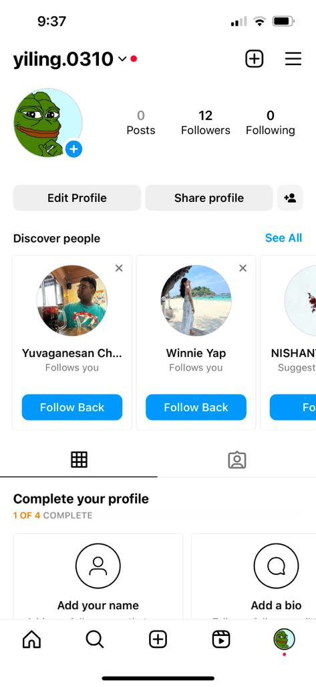

Scope 4
How long does it take for friends to find our new account?
Observation:
Week 1 Observation
Followers: 9

Week 2 Observation
Followers: 12
Week 3 Observation
Followers: 12

Week 4 Observation
Followers: 14

Summary:
Week 1 |
Week 2 |
Week 3 |
Week 4 |
|---|---|---|---|
9 |
12 |
12 |
14 |